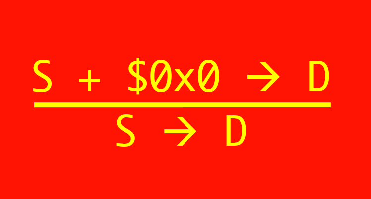

PROPAGANDA
Parallel ROP Attack Generator and Non-Direct Assembler
Ben Spinelli (bmspinel) and Chris Lee (christi3)
SUMMARY.
We implemented a parallel return-oriented programming (ROP) attack generator for multithreaded CPUs by designing and implementing a top-down, parallel search algorithm. By using a top-down approach, we are able to avoid wasting computation on exploring solutions that are distant from our target. This stands in contrast with the bottom-up approaches of most existing ROP attack generators which exhaustively generate all possible solutions until a satisfying solution is found.
For our presentation, we will demonstrate our solution's correctness by solving ROP attack targets from 15-213's Attack Lab and by demonstrating a successful ROP attack against a small web server. This shows the generality and real-world applicability of our program.
For our presentation, we will demonstrate our solution's correctness by solving ROP attack targets from 15-213's Attack Lab and by demonstrating a successful ROP attack against a small web server. This shows the generality and real-world applicability of our program.
BACKGROUND.
A return-oriented programming (ROP) attack is a modern technique for gaining control of vulnerable executables, allowing the attacker to execute arbitrary code of their choosing. The canonical vulnerability that allows use of a ROP attack is a buffer overflow vulnerability on a stack-allocated buffer used to hold user-input data. The bytes of the stack contain both data and control-flow information (most importantly, the address that the current function will return to when it finishes). When the size of the user input is not properly checked, the user is able to write past the space allocated for the buffer and overwrite this return address. When the input is arbitrary text, this usually results in writing an invalid address and a subsequent segfault, but a malicious actor can pick input such that the return address is whatever they choose.
In older versions of buffer overflow exploits, the attacker would input compiled bytecode as part of their attack string and then set the return pointer to the beginning of this code, thus gaining control over the program. To defend against such attacks, current systems prevent execution at the memory addresses that constitute the stack. Return-oriented programming is a circumvention of this protection. A fact of machine code is that starting execution from the middle of an instruction, which is just a sequence of bytes, might happen to correspond to executing some other instruction. Furthermore, the special byte
From this, an arbitrary attack that uses the program's existing code can be developed. The target executable is searched for
Illustration of a ROP attack.
Existing ROP attack generators are mostly written in a bottom-up fashion. All permutations of gadgets are tried for successive sequence lengths until a sequence with the desired effect is found or some failure condition is met. This can be made parallel quite easily, but a significant amount of useless computation might be done if there are a large number of gadgets that are not needed by the target (for example, any gadgets using registers not required in the most concise solution). Our algorithm differs from the norm by trying a top-down approach instead.
In older versions of buffer overflow exploits, the attacker would input compiled bytecode as part of their attack string and then set the return pointer to the beginning of this code, thus gaining control over the program. To defend against such attacks, current systems prevent execution at the memory addresses that constitute the stack. Return-oriented programming is a circumvention of this protection. A fact of machine code is that starting execution from the middle of an instruction, which is just a sequence of bytes, might happen to correspond to executing some other instruction. Furthermore, the special byte
0xc3, which encodes the return instruction, has the desirable property that it pops the address at the top of the stack into the instruction pointer, altering control flow.
From this, an arbitrary attack that uses the program's existing code can be developed. The target executable is searched for
c3-terminated sequences of bytes that happen to encode real x86 instructions and their address are noted. These sequences are referred to as gadgets. The challenge then becomes to find a sequence of gadgets that has the desired effect. This gadget sequence often achieves the effect in a non-direct manner, such as making extra moves through temporary registers, due to the constraints imposed by a non-complete selection of instructions available in the gadgets. The addresses of these gadgets are then written to the stack in order starting at the location of the return pointer. After each gadget executes, its terminating c3 causes the address of the next gadget to be popped off the stack into the instruction pointer, which causes that gadget to be executed too.
Illustration of a ROP attack.
Existing ROP attack generators are mostly written in a bottom-up fashion. All permutations of gadgets are tried for successive sequence lengths until a sequence with the desired effect is found or some failure condition is met. This can be made parallel quite easily, but a significant amount of useless computation might be done if there are a large number of gadgets that are not needed by the target (for example, any gadgets using registers not required in the most concise solution). Our algorithm differs from the norm by trying a top-down approach instead.
APPROACH.
Our system performs the task of searching for a gadget sequence that matches the desired target. It is the responsibility of the user to find the vulnerability in the executable and understand it well enough to create a meaningful target.
Input:
For the general algorithm, we created a few datatypes to represent the information that we needed.
The Algorithm:
Our approach is to build a tree where the children of a node are its decomposition. The general algorithm is as follows:
Example of a completed tree generated by our algorithm (bottom line is the root)
Additional Constraints on the Algorithm:
Our algorithm is made more complicated that some other search algorithms by the nature of our inference rules and the constraints imposed by this problem domain. Unlike, say, a proof search in constructive logic, there is no guarantee that the premises of a rule are smaller than its conclusion. In fact, in the case of the rule that decomposes a move into two moves with a temporary register in between, we are left with two problems of the same size. Furthermore, branches are not totally independent, as they will all be sharing the same registers once serialized. We add additional constraints to our algorithm to ensure termination and correctness.
The problem of creating a valid serialization is essentially a requirement that we create a deadlock-free schedule for the ordering of the gadgets. If we model each register as a resource, moving into it as acquiring that resource, and moving out of it as releasing the resource, then we see that a sequence of instructions on the registers meets the 4 conditions required. (1) Mutual exclusion: only one instruction be "holding" its value in a register at a time, (2/3) Holding and no preemption: the register isn't freed until the instruction that uses it as a source, (4) Circular wait: an invalid interleaving arises when any move that might come next would use a register that is already held by someone else. Because of this similarity, our n-dimensional path search is a generalization of 213's progress graphs, which are used to model deadlock.
Input:
- Assembly-like target whose effect should be realized by the attack
- Gadgets in the binary of the vulnerable executable
(many tools already exist to extract these automatically) - Rules to dictate how the assembly instructions will be decomposed
(a default list that is suitable for most targets is provided) - Optional convenience parameters (padding with zero bytes, etc.)
- String that when passed through the provided
hex2rawscript and entered into the vulnerable program will cause the target's effect.
For the general algorithm, we created a few datatypes to represent the information that we needed.
- Type - We classify gadgets into four types - Mov, Load, Store, and Arith - based on their behavior
- Mov - the gadget moves a value between registers
- Load - the gadget loads a value from the stack into a register
- Store - the gadget stores a value in a register to the stack
- Arith - the gadget performs an arithmetic operation on two registers and stores the result in a register
- Gadget - These represent one unit of execution. We use the gadget datatype to represent both actual gadgets in the executable and our target effect. They contained the type of the gadget and its source and destination registers. In the case that the gadget is a target gadget rather than an actual gadget, the source or destination may be temporary variables. For example,
mov %rax, t. In the case that it is a real gadget, it stores the address in the executable at which it is found. For example,mov %rax, %rdi. - Variable - These serve as placeholders in target gadgets when a concrete register has not yet been determined. For example, when we decompose a target, we may need to include a new register, but we don't know what register to use for it until we have matched it to a gadget in the program. Variables keep which register they are currently set to (if any) and also which registers we know we cannot set it to in any valid solution.
- Rule - These have three parts. (1) Premise - What the original target is. (2) Decomposition - What targets the premise can break up into. (3) Restrictions - What decompositions are not allowed in the children of this rules (important to prevent cycles). These are the inference rules in our search algorithm. Actual gadgets found in the binary are added represented as rules with only a premise, terminating that branch of the search once applied. Some examples of rules we include in our default rule file:
 Left: A rule that decomposes a register-register move into two using a temp register. Right: A rule that turns a move target into an arithmetic target.
The Algorithm:
Our approach is to build a tree where the children of a node are its decomposition. The general algorithm is as follows:
- Create a root node with the original target and put it in the queue
- While the queue is non-empty, remove a node and use its continuation value to resume searching where it last left off. Its value is an index into the list of rules and gadgets.
- If a gadget matches, propagate completion status backwards. Continue propagating until reaching a node with unfinished children. Along the way, serialize the results of the subproblems. If the queue is non-empty, pop off an item and continue.
- If a rule matches, apply that decomposition. If multiple children are created, update the current node to one of them (to assure locality) and add the rest to the queue.
- If all gadgets/rules for a node do not match, propagate failure status backwards until reaching a node with a non-terminal continuation. This node can continue searching with the next value of its continuation.
- If completion status propagates to the root. We have succeeded. If failure status propagates, we return that there is no solution.
Additional Constraints on the Algorithm:
Our algorithm is made more complicated that some other search algorithms by the nature of our inference rules and the constraints imposed by this problem domain. Unlike, say, a proof search in constructive logic, there is no guarantee that the premises of a rule are smaller than its conclusion. In fact, in the case of the rule that decomposes a move into two moves with a temporary register in between, we are left with two problems of the same size. Furthermore, branches are not totally independent, as they will all be sharing the same registers once serialized. We add additional constraints to our algorithm to ensure termination and correctness.
- Variable State - Each variable keeps track of (1) what register it is currently set to, (2) what registers we have proved it cannot be set to, and (3) what registers it cannot move into. If a variable is set to a particular register and all of the rules and gadgets are exhausted, our algorithm will mark that register as unusable by that variable. This helps us in backtracking and trying out different configurations of registers. Updates to this state are a form of implicit communication between the nodes for which the variable is a source or destination, so if they are on different threads, it must be synchronized.
- Pattern Matching - When we pattern match to a rule or a gadget, we have a restriction that if any of the children we would create are equivalent to an ancestor of that node, the pattern match fails. Matching an ancestor means that (1) the type of gadget is the same and (2) the sources and destinations used are of the same type (registers, unset variables, set variables, constants).
- Serializing a Gadget Sequence - The leaves of the tree must ultimately be given some execution order. Since moving things into a register overwrites the original contents, we cannot use a register as a temporary variable if a previous branch of our tree assumed it would maintain its value. When we serialize the result of a node, we need to pick an ordering which prevents such clobbering of registers while also preserving the overall behavior of the sequence. For a node with n independent children, this is computed as a path search on a n-dimensional grid. If this cannot be done, it is considered a failure of that node, and we continue searching if possible.
The problem of creating a valid serialization is essentially a requirement that we create a deadlock-free schedule for the ordering of the gadgets. If we model each register as a resource, moving into it as acquiring that resource, and moving out of it as releasing the resource, then we see that a sequence of instructions on the registers meets the 4 conditions required. (1) Mutual exclusion: only one instruction be "holding" its value in a register at a time, (2/3) Holding and no preemption: the register isn't freed until the instruction that uses it as a source, (4) Circular wait: an invalid interleaving arises when any move that might come next would use a register that is already held by someone else. Because of this similarity, our n-dimensional path search is a generalization of 213's progress graphs, which are used to model deadlock.
PARALLELISM APPROACH.
Our algorithm achieves its parallelism by partitioning the search tree into subtrees, each of which is handled by a separate thread. We run a very small beginning portion of the search serially to generate a set of nodes which will be the roots of these subtrees. Once assigned to threads, these subtrees only need to synchronize and communicate with each other when an event happens that propagates to the parent of the subtrees' root (e.g., the entire subtree completes or fails). This is important to our algorithm because of the dependencies between branches created by the variable and serialization constraints described above. Solving two nodes with a nearby common ancestor requires more communication (via shared state) and synchronization than solving two nodes that are distant in the tree. This is because nearby nodes are more likely to share a changing variable and will have to be part of a subtree serialization more often as we search through different solutions. For this reason, there is an advantage to making the division among the threads as close to the original root as possible.
In the case that our input is large or complicated enough to generate more subtree roots than there are threads, the remaining subtree roots are kept in a work queue, which threads pop from as they complete their assigned work. Because the amount of time to access this work queue is small compared to the amount of time needed to solve a subtree, and because subtrees rarely take exactly the same amount of time to solve, we found it sufficient to synchronize access to the work queue with a simple lock.
This same property that subtrees may take different amounts of time to solve, however, is the source of the greatest barrier to full parallelism in our algorithm, as it creates workload imbalance. (Support of this through our test measurements can be found in the Results below.) We had originally anticipated that keeping all threads busy would be part of the challenge, so we had designed a method to put nodes in a global set of queues and assign them to threads at a per-node level so that work would be dynamically distributed at a much finer scale. Note that, as is also the case in our final algorithm, a thread automatically takes the first child of a node as its next node, so it only has to pop from the queue when it hits a leaf, rather then every time. This, in both versions, is to increase locality and decrease the amount of time spent running queue operations. We would then always use fine-grained locking to maintain synchronization on variable updates and serialization since such tasks would possibly be on separate threads.
After several days of implementing this finer-grained parallelism, we determined that it was actually worse (in wallclock time) than our other algorithm on a typical target, as imbalance in a typical target isn't terribly high. Looking at the generated trees, such as the example above, which is representative of what a subtree of our current algorithm might look like for a larger input, we hypothesised that this was because of an inconsistency between the shape of the trees we expected and the shape of the trees we actually get. We expected the tree to be closer to a balanced binary tree. If that were the case, the separate threads would mostly remain distant in the tree because we continue going down a DFS path with the thread until it hits a leaf. But the actual subtrees, once we get a few steps from the original root, are much more the shape of a "lobster graph," which there is one main path with many extremely short offshoots. Our proposed explanation for what is happening in the fine-grained work distribution algorithm is that one thread gets that main path, and then all of the other threads contend for the short offshoots, possibly leaving most of them idle depending on how much of the main path has been generated, and certainly incurring a lot of cost competing for the locks and shared state of those nodes, which is also needed by the thread on the main path, since they are all near each other. Or in an even worse case, they may be repeatedly putting the next node for the main path in the queue and taking the other route, making forward progress even messier.
Because of this, we switched back to the simpler method, as we care more about the performance on a typical attack string than we do about the performance in a unlikely worst case scenario.
In the case that our input is large or complicated enough to generate more subtree roots than there are threads, the remaining subtree roots are kept in a work queue, which threads pop from as they complete their assigned work. Because the amount of time to access this work queue is small compared to the amount of time needed to solve a subtree, and because subtrees rarely take exactly the same amount of time to solve, we found it sufficient to synchronize access to the work queue with a simple lock.
This same property that subtrees may take different amounts of time to solve, however, is the source of the greatest barrier to full parallelism in our algorithm, as it creates workload imbalance. (Support of this through our test measurements can be found in the Results below.) We had originally anticipated that keeping all threads busy would be part of the challenge, so we had designed a method to put nodes in a global set of queues and assign them to threads at a per-node level so that work would be dynamically distributed at a much finer scale. Note that, as is also the case in our final algorithm, a thread automatically takes the first child of a node as its next node, so it only has to pop from the queue when it hits a leaf, rather then every time. This, in both versions, is to increase locality and decrease the amount of time spent running queue operations. We would then always use fine-grained locking to maintain synchronization on variable updates and serialization since such tasks would possibly be on separate threads.
After several days of implementing this finer-grained parallelism, we determined that it was actually worse (in wallclock time) than our other algorithm on a typical target, as imbalance in a typical target isn't terribly high. Looking at the generated trees, such as the example above, which is representative of what a subtree of our current algorithm might look like for a larger input, we hypothesised that this was because of an inconsistency between the shape of the trees we expected and the shape of the trees we actually get. We expected the tree to be closer to a balanced binary tree. If that were the case, the separate threads would mostly remain distant in the tree because we continue going down a DFS path with the thread until it hits a leaf. But the actual subtrees, once we get a few steps from the original root, are much more the shape of a "lobster graph," which there is one main path with many extremely short offshoots. Our proposed explanation for what is happening in the fine-grained work distribution algorithm is that one thread gets that main path, and then all of the other threads contend for the short offshoots, possibly leaving most of them idle depending on how much of the main path has been generated, and certainly incurring a lot of cost competing for the locks and shared state of those nodes, which is also needed by the thread on the main path, since they are all near each other. Or in an even worse case, they may be repeatedly putting the next node for the main path in the queue and taking the other route, making forward progress even messier.
Because of this, we switched back to the simpler method, as we care more about the performance on a typical attack string than we do about the performance in a unlikely worst case scenario.
RESULTS.
Methodology:
We constructed targets of three different sizes, some representing typical attack targets and others representing purposely favorable or unfavorable balance conditions. The small size test is the final level AttackLab target, the medium size is an attack that is about four times larger than it, and the large test is an attack that is three times larger still (12x AttackLab size). For each target, we timed our test across 10 runs and then used the average for speedup calculations. Timing measurements include the entire solver portion of our algorithm, but do not include reading input or writing output. All measurements were taken on GHC38, which has a 6 core Intel Xeon CPU with two execution contexts per core.
Runtime
Our solution achieves fast attack generation times, with even our larger tests completing in less than a second on a single core. In our background reading on other, brute-force solutions, which generate every possible combination, we saw reported runtimes as high as several minutes, which gave us reason to believe this problem would benefit greatly from parallelism. But our test which generates a solution of length 96 from a selection of 16 gadgets takes only 300ms on a single thread - far faster than all length 96 combinations could be generated naively. Because of this, good speedup ended up being less useful than we original anticipated, but we were able to achieve decent speedup results anyway.
Speedup on Small, Medium, and Large Targets:
There are two important conclusions we draw from running our targets of different sizes. The first is that target size is an important factor in determining the amount of available parallelism. Recall again the solution tree of the AttackLab target above. This is the smallest target we tested. Because of the imbalance in this graph, it cannot be split into more than one meaningful piece, so adding more threads has negligible impact. On a larger target, we get multiple such chains, so our early distribution can assign these nodes to multiple threads. The larger the size of the target, the more benefit we gain from this.
These conclusions are also supported by the numerical data. For example, in one run of the medium target on 4 threads, returned in 18.5, 26.2, 27.2, and 28.3ms, not including the serial assignment and final sequence construction portions on either end. Because we are limited by the slowest of these, we can achieve at best (18.5 + 26.2 + 27.2 + 28.3) / (28.3) = 3.5x speedup over the single-threaded version. This particular test case achieved a 3.3x speedup, so the work imbalance is then the biggest contributer to the deviation from a linear 4x, and the existence of the short serial portions reasonably explains the remaining loss.
Speedup on an Adversarial Target:
The next target we measured was a target specifically chosen to create significant imbalance with our scheduling algorithm. Unsurprisingly, it saw very little speedup, with no benefit achieved from using anything more than two threads. This provides further evidence for our claim that workload imbalance is our greatest barrier to speedup. Cases like these were the reason behind our attempt to design an algorithm with finer-grained scheduling, but unfortunately we learned that our solution, at least, did not actually improve the timings.
Speedup on Targets with No Solution:
Imbalance can actually be a good thing, however, on targets with no solution. This is due to the short-circuiting property of our algorithm. If a multiple-line target has any line that is impossible, the entire target is also impossible, so we keep a flag visible to all threads that signals to them when another thread has reached such a failure, at which point they all immediately abandon their own searches. The effect of this on speedup depends on where in the serial algorithm the first failing branch would have been found. If it is at the beginning, we see no speedup across threads, as all configurations cause the short circuit after an equal amount of time. If the short-circuiting branch is at the end of the tree and is shorter than the others, however, rather than seeing a loss of speedup because of imbalance, we see a huge burst in speedup as soon as the number of threads is large enough that it can be scheduled as part of the first round of computation. In our test designed to demonstrate this, we saw a change from 1x to 50x speedup when going from 4 to 6 threads.
We constructed targets of three different sizes, some representing typical attack targets and others representing purposely favorable or unfavorable balance conditions. The small size test is the final level AttackLab target, the medium size is an attack that is about four times larger than it, and the large test is an attack that is three times larger still (12x AttackLab size). For each target, we timed our test across 10 runs and then used the average for speedup calculations. Timing measurements include the entire solver portion of our algorithm, but do not include reading input or writing output. All measurements were taken on GHC38, which has a 6 core Intel Xeon CPU with two execution contexts per core.
Runtime
Our solution achieves fast attack generation times, with even our larger tests completing in less than a second on a single core. In our background reading on other, brute-force solutions, which generate every possible combination, we saw reported runtimes as high as several minutes, which gave us reason to believe this problem would benefit greatly from parallelism. But our test which generates a solution of length 96 from a selection of 16 gadgets takes only 300ms on a single thread - far faster than all length 96 combinations could be generated naively. Because of this, good speedup ended up being less useful than we original anticipated, but we were able to achieve decent speedup results anyway.
Speedup on Small, Medium, and Large Targets:
There are two important conclusions we draw from running our targets of different sizes. The first is that target size is an important factor in determining the amount of available parallelism. Recall again the solution tree of the AttackLab target above. This is the smallest target we tested. Because of the imbalance in this graph, it cannot be split into more than one meaningful piece, so adding more threads has negligible impact. On a larger target, we get multiple such chains, so our early distribution can assign these nodes to multiple threads. The larger the size of the target, the more benefit we gain from this.
These conclusions are also supported by the numerical data. For example, in one run of the medium target on 4 threads, returned in 18.5, 26.2, 27.2, and 28.3ms, not including the serial assignment and final sequence construction portions on either end. Because we are limited by the slowest of these, we can achieve at best (18.5 + 26.2 + 27.2 + 28.3) / (28.3) = 3.5x speedup over the single-threaded version. This particular test case achieved a 3.3x speedup, so the work imbalance is then the biggest contributer to the deviation from a linear 4x, and the existence of the short serial portions reasonably explains the remaining loss.
Speedup on an Adversarial Target:
The next target we measured was a target specifically chosen to create significant imbalance with our scheduling algorithm. Unsurprisingly, it saw very little speedup, with no benefit achieved from using anything more than two threads. This provides further evidence for our claim that workload imbalance is our greatest barrier to speedup. Cases like these were the reason behind our attempt to design an algorithm with finer-grained scheduling, but unfortunately we learned that our solution, at least, did not actually improve the timings.
Speedup on Targets with No Solution:
Imbalance can actually be a good thing, however, on targets with no solution. This is due to the short-circuiting property of our algorithm. If a multiple-line target has any line that is impossible, the entire target is also impossible, so we keep a flag visible to all threads that signals to them when another thread has reached such a failure, at which point they all immediately abandon their own searches. The effect of this on speedup depends on where in the serial algorithm the first failing branch would have been found. If it is at the beginning, we see no speedup across threads, as all configurations cause the short circuit after an equal amount of time. If the short-circuiting branch is at the end of the tree and is shorter than the others, however, rather than seeing a loss of speedup because of imbalance, we see a huge burst in speedup as soon as the number of threads is large enough that it can be scheduled as part of the first round of computation. In our test designed to demonstrate this, we saw a change from 1x to 50x speedup when going from 4 to 6 threads.
REFERENCES.
LIST OF WORK BY EACH STUDENT.
"equal work was performed by both comrades"